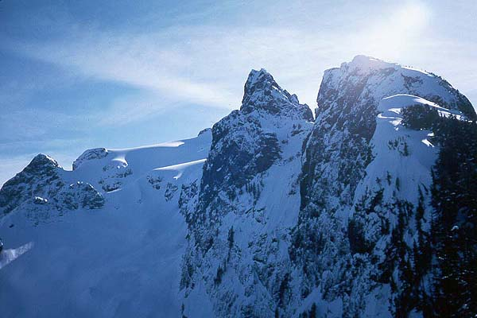
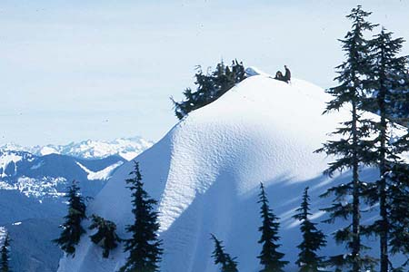
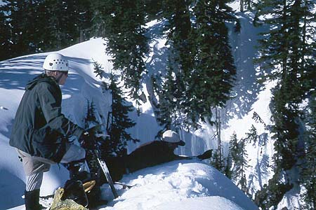
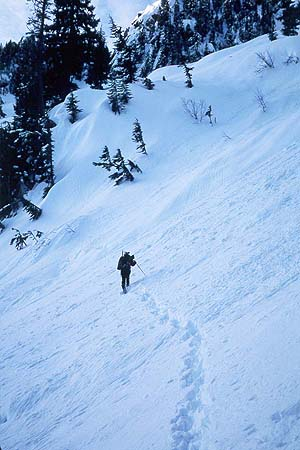
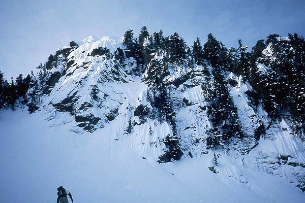
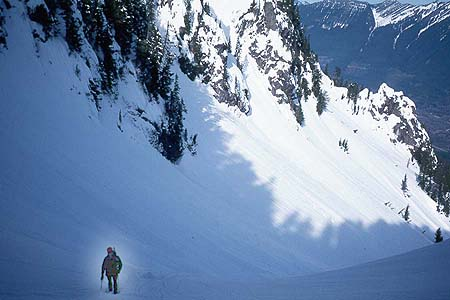
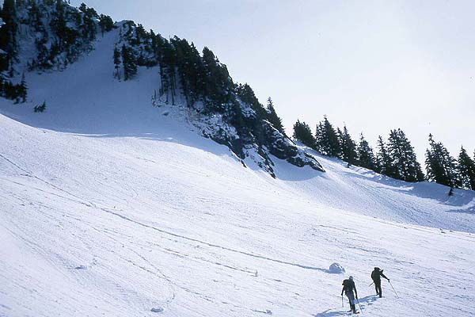
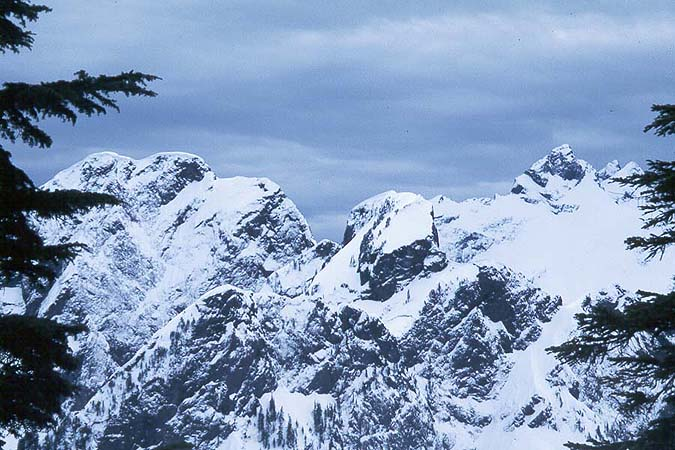
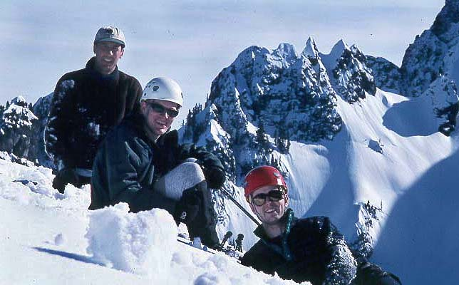

Whitehorse Mountain
Peter and I had discussed climbing Whitehorse, a 6500 foot high mountain that watches over Darrington. The mountain had been in the news over the last year. For 15 years, a Bulgarian hermit had lived on the mountain, hiding in secret camps. Not wanting to harm animals, he occasionally broke into country cabins to steal canned food. He never hurt anyone, but eventually the townspeople had had enough, and the police nabbed him. He lost a foot in the process, and won a lawsuit due to the severe mauling given him by a police dog. Now, he may be tried for treason in Bulgaria. What a story!
But this mountain is how I imagine some lesser peaks in the Alps to be: A formidable glaciated peak looming over a village and tilled fields.
The winter season this year has been incredible from a climbing standpoint. It seems to have cleared for 4 days every two weeks or less, giving more weekend fun opportunities than usual. Our climb was at the close of such a high-pressure window, and we hoped to beat the clouds we knew would arrive by sundown.
We settled on the standard route, but also discussed the Whitehorse Glacier as a possibility. Wanting to avoid avalanche terrain, we discarded this idea, since it gets a special mention for that type of danger. Peter invited Jake, who brought experience (he’d been on part of the route before) and mind-boggling stories of his adventures in the mountains. He’s currently on an envious climbing binge!
Jake had been to the trail two weeks before, unable to drive the car over snow to the 800-foot high trailhead. He was shocked that all that snow had melted to about 2000 feet. The three of us geared up and chugged up the steep switchbacks of the lower trail, getting a 5:30 am start. Surrounded by gloomy forest, we lost tracks in the snow at an avalanche chute. Prudently, we headed 800 feet straight up through forest until we met tracks again on the ridge-top. Here, we saw a brilliant red sky behind Glacier Peak, and the panorama of mountains to the north. We could see into the Picket Range, Mt. Baker, and many peaks to the northeast.
At 4000 feet the tree cover lessened, and we found ourselves in a sloping basin with awesome views onto the Whitehorse Glacier to our east. Our slope faced north, and for the next 2 hours we fought deep, powdery snow that fell apart like sand. We crossed about 150 feet of avalanche debris. The avalanche had originated at least 300 feet above in a tight colouir. The rocky cliffs above had unusually light snow-cover for this time of year, so we weren’t very worried about additional slides. Still, my thoughts were very insecure.









After this point, we took turns breaking trail through steep snow up to Lone Tree Pass, stopping at a clump of trees for some food and a chance to enjoy the scenery. Somebody was target shooting down in the valley. We tried to pick out Eldorado Peak, but couldn’t distinguish it from the dozens of snow peaks nearby.
Once at the pass, we continued on the ridge top for a short distance, reaching a clear area with a snowy “view-hump.” We took quite a few pictures, Peter even got a self-timed picture of us all. The view was 700 feet straight down to the basin we had climbed. Directly across was the Whitehorse Glacier, which appeared impassable due to two {\em Bergshrunds}, 400 feet apart from each other. They both completely bisected the slope. It would be quite a feat to cross them.
Here I relunctantly voiced my fears about continuing, mainly the avalanche chute below gnawed at me, also I was tired and knew we had a world of exhausting travel ahead of us. I knew we also had some technical terrain at the end, and more possibly dangerous slopes on the south side, getting their full compliment of sun. Peter and Jake pointed out that the avalanche area we had crossed earlier was already back in shade, and this eased my mind considerably. After a drink, I felt ready to keep going. I also couldn’t believe I was on a mountain that I would consider formidable in summertime…and it was deep winter! That’s one of the coolest things about this climb though!
We kept traversing east on the south side of the ridge, looking for the right gully to turn up to the 6000+ foot High Pass. We had dropped 400 feet, but slowly regained that altitude as we traversed. We emerged in an open area beneath a gigantic rock buttress, with a tempting gully going up to it’s right. That must be our gully, we thought. But Peter had gotten detailed notes from Jeff, who had visited this area last year. Very clearly, his notes stated that this was the wrong gully. He and Mat had climbed it, “sealing their fate” by topping out at some impassable obstacle. Darn! We were tired of traversing and ready to head up to the glacier. Jake and Peter did the lions share of plowing further on around a corner to a clump of trees on a steep hillside. From this point, we saw a huge colouir capped by a striking rock tower. This was certainly our route, and yet we were too high. The right thing to do is to drop 400-500 feet, stay low on a bench, and climb again only when you are at the bottom of this colouir. From our vantage point, we had almost a mile of steep slopes and gullies to cross if we wanted to get there. We could see the bench 500 feet below us.
To add insult to injury, the weather had arrived. Blue skies turned to silvery white wisps, and then quickly to dull gray hummocks. For much of the way since Lone Tree Pass, we had a view of Three Fingers, and it’s appearance became more forbidding as the clouds rolled over it towards us.
And so we turned around at 1:30 pm, having been on the move for 7 hours. By the time we got back to the ridge-top, it was snowing lightly. Here we met two skiers with their long tele boards strapped to their back. They thanked us for the steps that made their climb easier! Coming down from the pass was quick, we removed our snowshoes and plunge stepped, getting covered in snow, but enjoying the quick ride down. With each step, you could slide several feet, and we got several standing and sitting glissades in too. Crossing the avalanche chute was trivial, but the minor vertical gains we had to make after this wiped me out. A boost of energy came during excellent glissades down into the forest. Peter and Jake held contests to see who could “ski” off the biggest drops.
We decided to glissade that first chute, knowing that the skiers (and their dog, did I mention that?) had come up that way. Wheee! The sweet reward for hours of toil – the sitting glissade! To ride in comfort down the mountain, looking at pastures below, giving your aching legs a rest…We brought cartloads of snow down with us, Jake and I got bonked in the back by some bigger chunks. I laughed when a “snow boulder” whizzed down into a tree (that I steered to the left of) and smashed into 17 little boulders.
Jake scouted for the spot to enter the forest again, and it was the dog tracks that led us to the right spot. The trail here became very difficult, since the snow had warmed, providing alarming moments where your step collapses and you are up to your waist in a hole, possible well-lodged-in by vines or roots. Jake fell in this fashion, turning a somersault after losing his balance (a hand thrust out to grab a sapling saved him from injury), and Peter got his foot stuck under a branch, getting trapped and nearly injuring a knee. Yes, the curses were flying in this hard, bitter forest…
We had a laugh when Jake grabbed a Devil’s Club vine to get around a fallen tree (it was that or fall). I squirmed under the tree, and Peter found another way over. As the light faded, we zoomed down the switchbacks of the forest, reaching the car at 5:30, 12 hours after our climb started.
What did I learn from this trip? What I learn from every winter trip: winter is hard! Oh, and a pint of Guinness to sooth the aching muscles is not an optional component when the mountains leave you bruised and sore. Also, I have some great stories from Jake to pass on. Thanks guys!